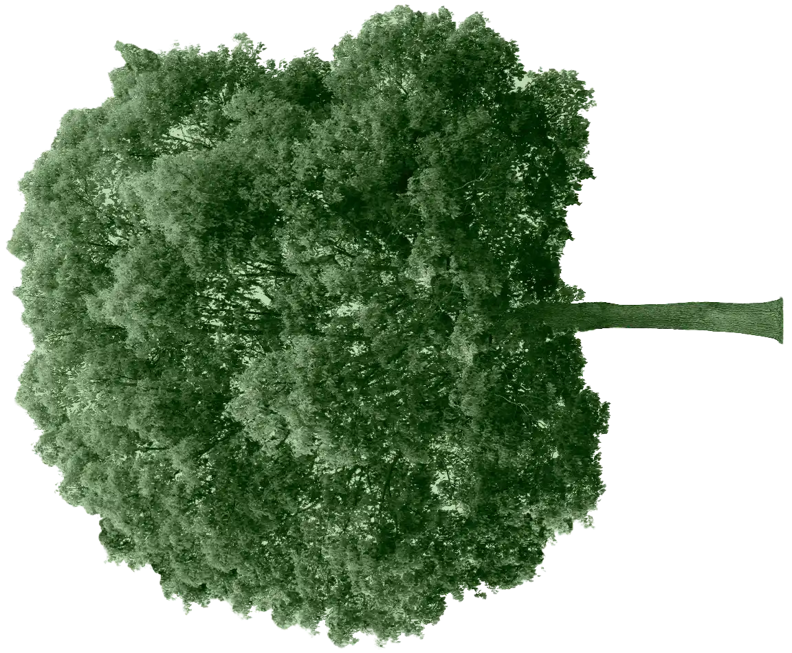
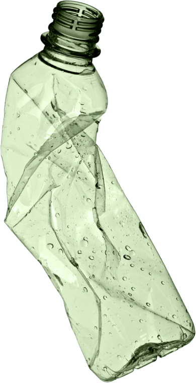
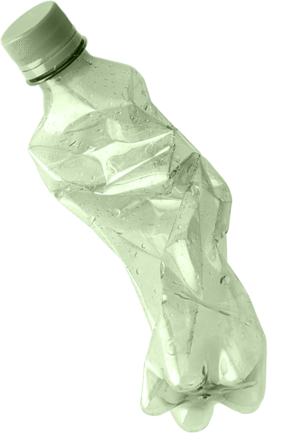
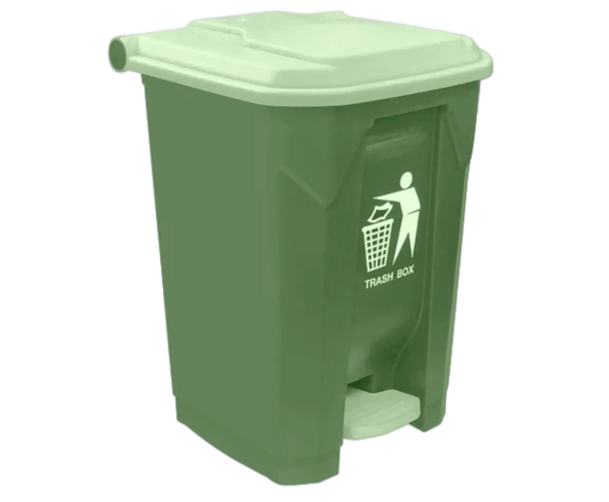

Currently, global environmental problems are becoming increasingly serious and only the cooperation of people who are aware of their sphere of responsibility can lead to the solution of complex environmental problems. Therefore, we invite you to participate in our case-championship and contribute to the preservation of the environment.

The case of this championship is plastic packing
Massiveness
The main problem of plastic packaging is its mass production and use, which leads to the accumulation of huge volumes of plastic waste, which decomposes extremely slowly and seriously pollutes the environment.
Environmental damage
A large amount of plastic waste ends up in the oceans and rivers, polluting aquatic ecosystems and threatening the lives of marine and terrestrial animals. Moreover, the production of plastic packaging requires a significant amount of oil and energy, which increases the negative impact on the climate and natural resources.
 
The solution of the case will consist of two stages
1
A team of 4-5 students will investigate and solve a given problem during 1-2 months.
October 1 - November 30
2
The best teams will have to present the results of their research in an online format.
December 15-16
Teams will have to
Find a way out of the already existing situation and prevent its deterioration
Develop a checklist of simple actions for each person
Create a team page in social networks and talk about the stages of solving the case

Prizes from the organizers
Unique NFT tokens
We have created unique NFT tokens for prize winners and winners, digital assets with information about your contribution to solving environmental problems. These tokens are a symbol of environmental conservation, they will be valuable for collectors and enthusiasts.
Eco-winner Diploma
questions and answers
WHY WAS THE ECO-FEST CASE CHAMPIONSHIP CREATED?
The case championship was created to show the significance of each person’s actions in solving environmental problems and to unite students from different specialties towards a common goal
WHO CAN TAKE PART IN THE CASE CHAMPIONSHIP?
1st-4th year students of universities of various specialties
WHO IS ON THE JURY OF THE ECO-FEST CASE CHAMPIONSHIP?
Scientists from the Zubov State Oceanographic Institute and other invited experts
HOW ARE THE TEAMS OF CASE CHAMPIONSHIP PARTICIPANTS FORMED?
A team of 4-5 people is formed by the organizers from among the people who submitted an application.
WHAT IS THE CASE TASK?
The task was prepared by the ECO-FEST team and is the same for all participants of the championship. The case task was developed in such a way that each participant of any background could contribute to the overall solution. Although the case provides a fairly detailed description of the premises used, it does not have a single correct solution.
HOW SHOULD THE TEAMS SEND THE SOLUTION OF THE CASE?
Each team will receive a form in which they will need to send a link to the team group on a social network and a presentation of the solution
WHAT MATERIALS SHOULD BE PREPARED BY PARTICIPANTS DURING THE CASE?
a) a team group with photos and videos showing the progress of solving of the case task; b) a presentation with the solution of the case; c) a checklist for the correct handling of plastic packaging
Contact information Communication with the organizers
You can find all the relevant information about our case championship in our social networks, and if you have a question, write to our mail: